Presentación
La Comunidad Śaiva-Śākta es un pequeño grupo de devotos y buscadores que se reúne en Madrid y en línea para estudiar y practicar la tradición Sarvāmnāya. No nos acercamos a ella como a un objeto de estudio, sino como a un camino. Nos sostiene la confianza (śraddhā) en el linaje y en el guru, y nos mueve la devoción (bhakti) a Mahādevī, la Śakti que es a la vez la conciencia y su poder de manifestarse.
Queremos ser una puerta de entrada en castellano a este linaje. Nos reunimos cada quince días, la participación es gratuita y no requiere conocimientos previos.
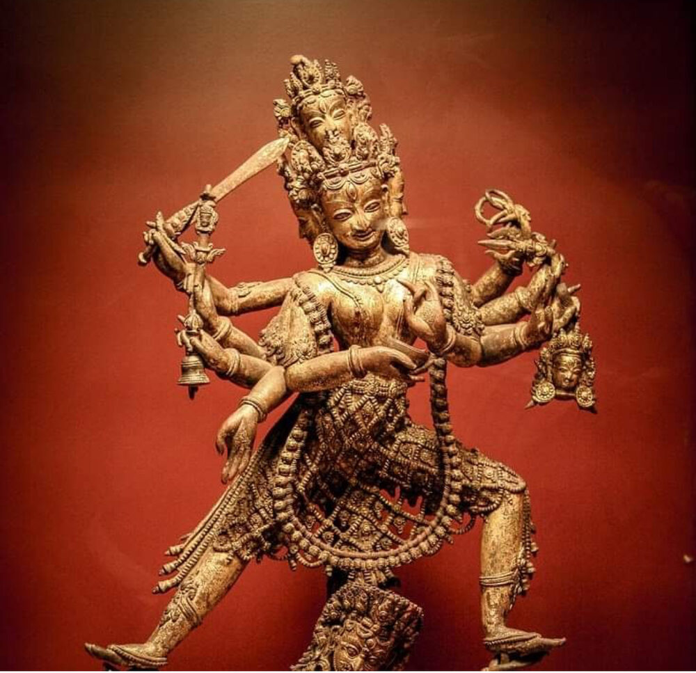
Actividades
Cada sesión, de una hora, comienza con una breve recitación y unos minutos de contemplación, continúa con la lectura comentada de un pasaje de un texto clásico (śāstra) y se cierra con un espacio para compartir dudas y experiencias. Poco a poco nos iniciamos también en la práctica (sādhana), siempre según las indicaciones de la tradición.
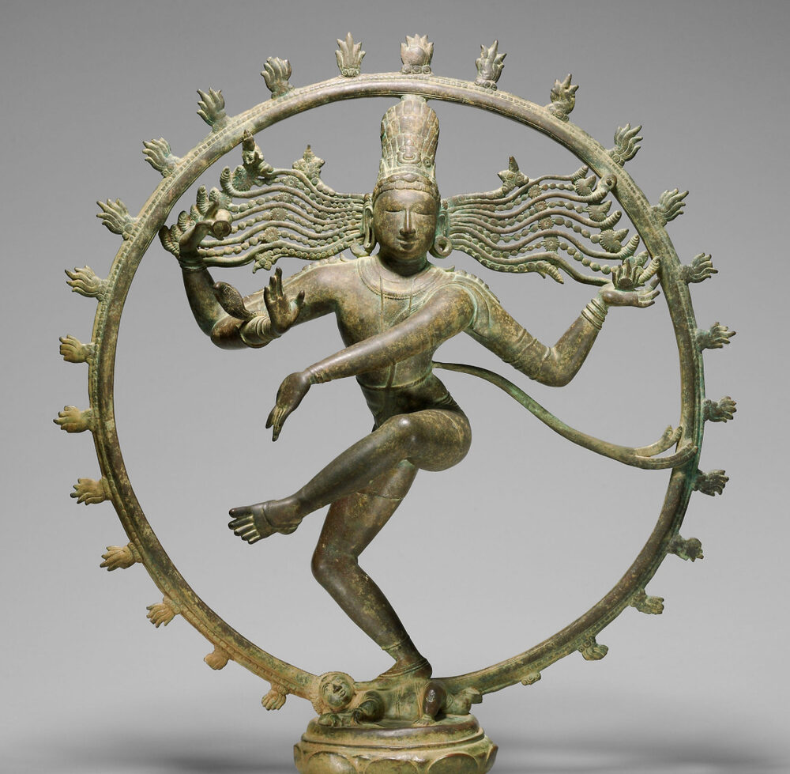
Participar
La comunidad está abierta a cualquier persona que sienta la llamada de este camino, sin necesidad de saber sánscrito ni de formación académica. Basta con un corazón abierto a Mahādevī, confianza en el linaje y el compromiso de participar con regularidad. Quienes deseen profundizar también pueden seguir con nosotros, en castellano, el curso de introducción al Sarvāmnāya de Vimarsha Foundation, que la tradición requiere antes de recibir la iniciación (dīkṣā) de manos de Ācāryaji Sthaneshwar Timalsina.
Las sesiones son inicialmente en castellano, pero quienes no hablen castellano son igualmente bienvenidos. Podemos conversar en inglés y compartir en ese idioma los materiales originales de la tradición.
Para participar, puedes escribirnos por WhatsApp y contarnos brevemente qué te mueve a unirte. Te responderemos con la fecha y el lugar de la próxima sesión.
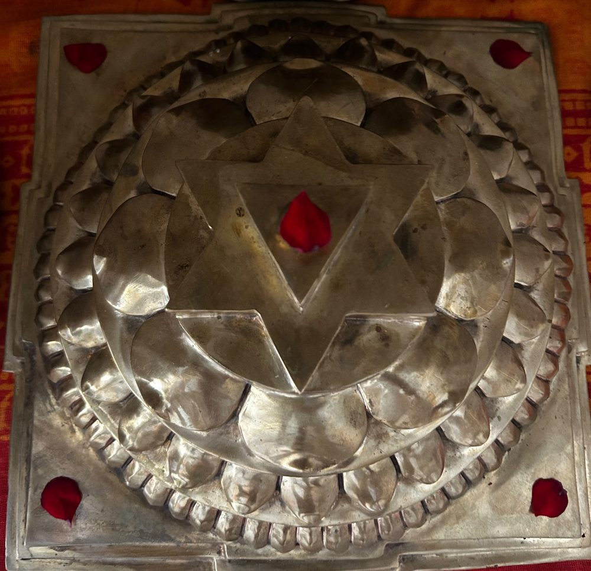
Tradición
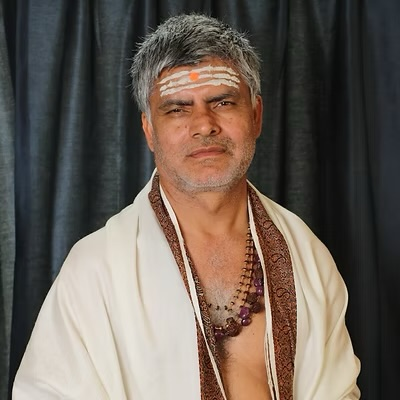
En la tradición Śaiva-Śākta, el estudio y la práctica se reciben de maestro a discípulo, dentro de un linaje (guru-śiṣya-paramparā). El nuestro se denomina Sarvāmnāya, e integra en un único sistema grandes corrientes como Trika, Kālīkrama, Kubjikā y Śrīvidyā. Esta síntesis se ha preservado en Nepal, especialmente en el valle de Katmandú, al menos desde el siglo XII, y sus enseñanzas se han transmitido sin interrupción hasta nuestros días.
Fuera de Nepal, el linaje Sarvāmnāya tiene hoy en Ācārya Sthaneshwar Timalsina a su principal depositario. Formado desde la infancia en el gurukula védico de su padre y consagrado como ācārya en 1996, une la transmisión tradicional con una destacada carrera universitaria, hoy como titular de la cátedra de Humanidades Índicas Clásicas de la Stony Brook University (Nueva York).
En 2019 fundó Vimarsha Foundation, concebida como un gurukula global para el estudio de los sistemas filosóficos clásicos de la India. Nuestra comunidad pretende reunir en España a personas iniciadas en este sampradāya, así como a personas no iniciadas que quieran acercarse a la tradición. En nuestro blog presentamos la genealogía completa del linaje.
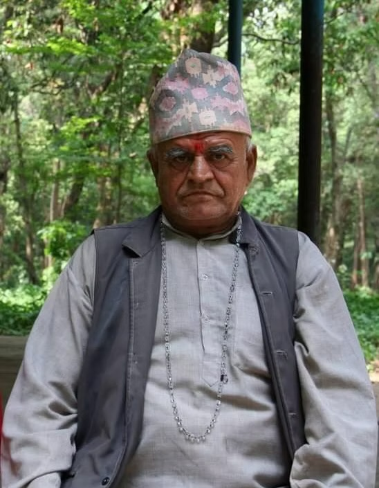
Paṇḍita Tanka Prasad Timalsina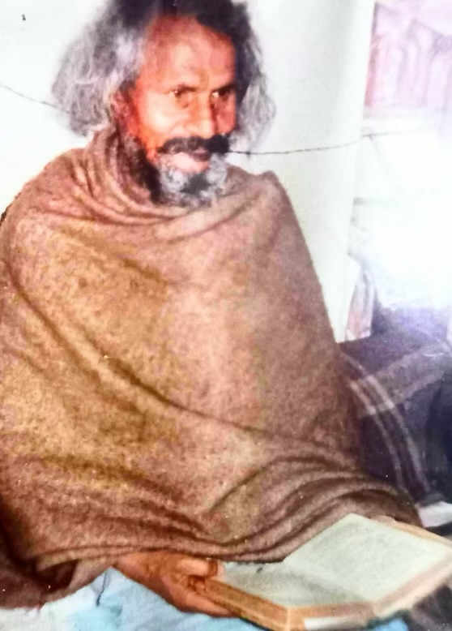
Svāmī Premchetan Brahmacārī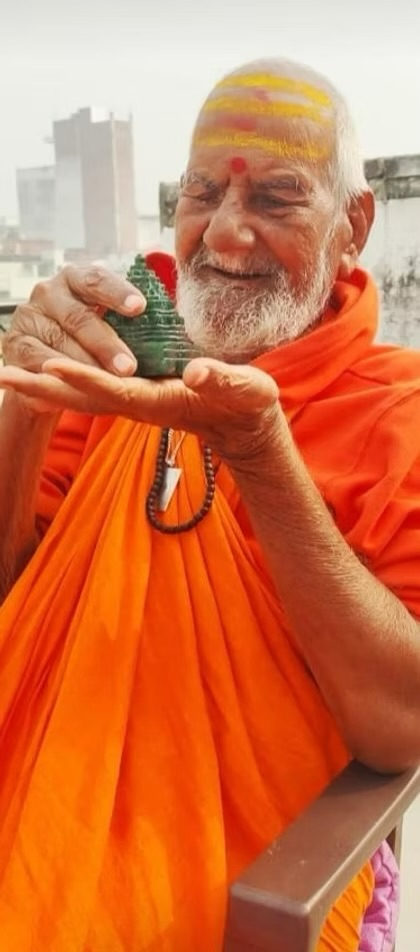
Śaṅkara Caitanya Bhāratī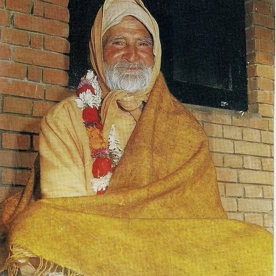
Khaptaḍa Bābā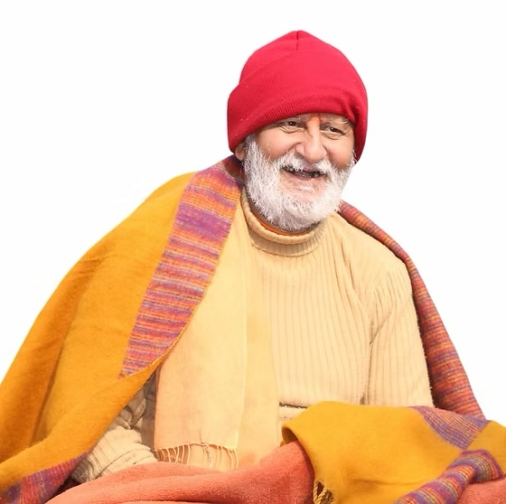
Rāmānanda Giri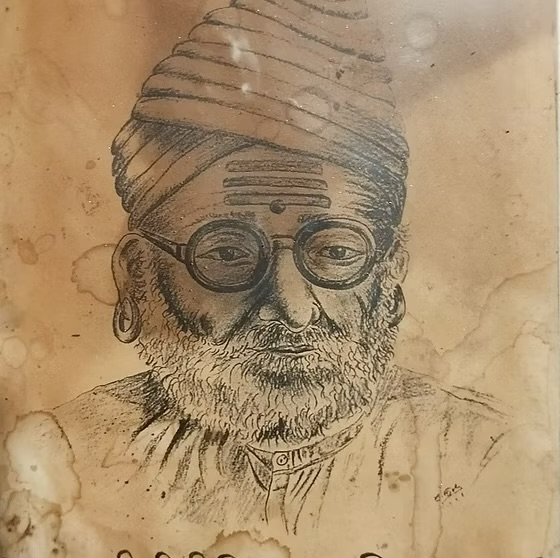
Yogī Kṣiprānāth
Filosofía
Una de las enseñanzas más profundas de la filosofía india es que la plenitud (pūrṇatā) no es algo que nos falte, sino algo que hemos olvidado. Presente desde los textos fundacionales (āgama) de diversas corrientes Śaiva-Śākta, esta intuición alcanzó su formulación más rigurosa con el filósofo cachemir Abhinavagupta (siglos X–XI). Su sistema Trika (impropiamente llamado “shivaísmo de Cachemira”) integró corrientes como Kaula y Krama con la filosofía del reconocimiento (Pratyabhijñā), sistematizada antes por Utpaladeva, el maestro de su maestro.
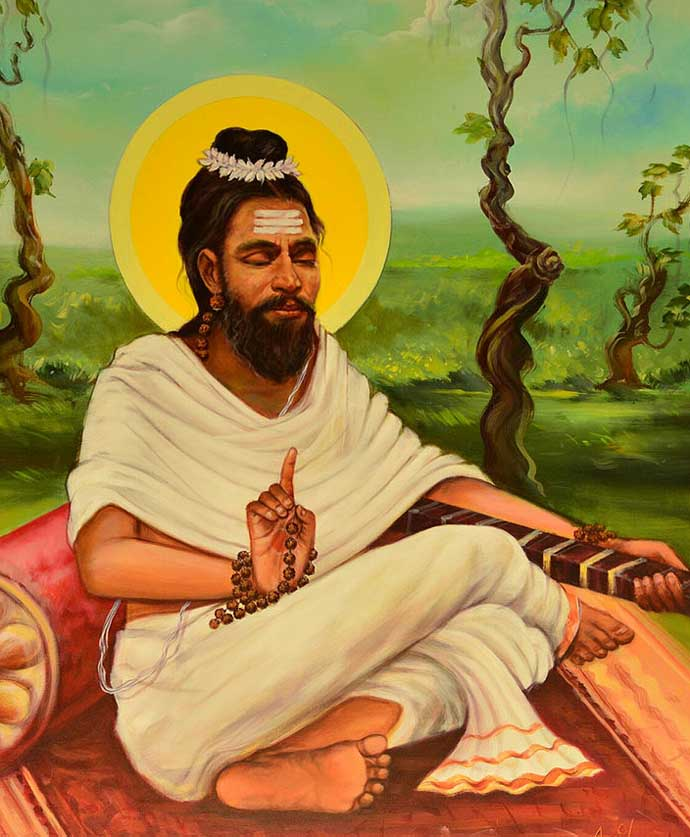
Como indica su nombre, la escuela del reconocimiento invita a reconocer (pratyabhijñā) que la realidad entera, y nosotros en ella, es conciencia (caitanya), unidad indisociable de manifestación (prakāśa) y reflexividad (vimarśa). Se trata de una ontología monista, inseparable de una praxis contemplativa. Comparte así con el Advaita Vedānta de Śaṅkarācārya la afirmación de un absoluto no dual, pero no niega su dimensión creativa, dinámica e inmanente (śakti). Por eso se define como un no dualismo supremo (paramādvaita), que no excluye la diversidad del mundo, sino que la integra.
Lo que nos limita, entonces, no es el mundo fenoménico. Es la propia conciencia universal (Paramaśiva) la que, en virtud de su libertad (svātantrya), se contrae (saṃkoca), vela su plenitud y se experimenta como una pluralidad de sujetos finitos, cuyo campo de experiencia se articula en objetos aparentemente independientes. Por consiguiente, la liberación (mokṣa) consiste en recordar nuestra propia naturaleza (svarūpa) como esa plenitud, hasta que sujeto y objeto se descubran como polos de una sola conciencia indivisa (saṃvit). Hablamos, por tanto, de un despertar que no aguarda a la muerte (jīvanmukti), y en el que la propia limitación motora, cognitiva y fenoménica del sujeto psicofísico (jīva) se revela como expresión particularizada de la conciencia. De ahí el asombro gozoso (camatkāra) con que la conciencia se deleita en la diversidad de estados (bhāva) y sabores (rasa) que la limitación y la multiplicidad posibilitan. No se trata, pues, de una filosofía centrada en la mera especulación intelectual, sino de una filosofía experiencial cuyo carácter es fundamentalmente soteriológico. Estudio (svādhyāya) y práctica (sādhana) son, así, medios orientados a la realización de la unidad indisoluble (sāmarasya) de Śiva y Śakti, la conciencia y su dinamismo autorreflexivo.
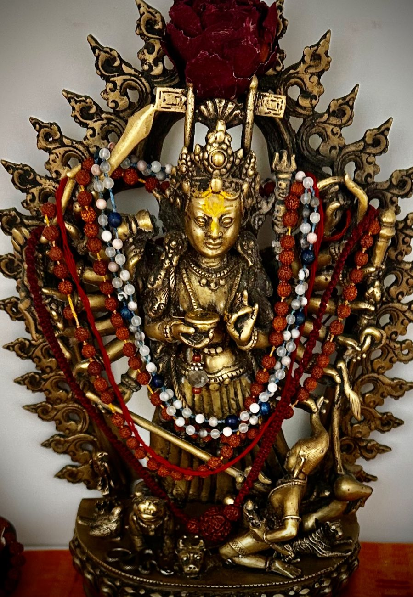
Esta unidad no anula la relación. La tradición reconoce la śakti como Mahādevī, como un tú vivo al que es posible dirigirse, de modo que la propia no dualidad deja espacio para el encuentro. La devoción (bhakti) no supone así un retorno al dualismo, sino el juego relacional de una conciencia que se desdobla para amarse y reconocerse a sí misma. El propio Utpaladeva, que sistematizó la filosofía del reconocimiento, expresó esta intuición en sus himnos (Śivastotrāvalī), donde el pensamiento no dual se dirige a lo absoluto como a un tú. Por eso, en nuestra comunidad, el estudio no es un fin en sí mismo. El razonamiento correcto (sattarka), la confianza (śraddhā) y la devoción (bhakti) se entienden como facetas de una misma realización.